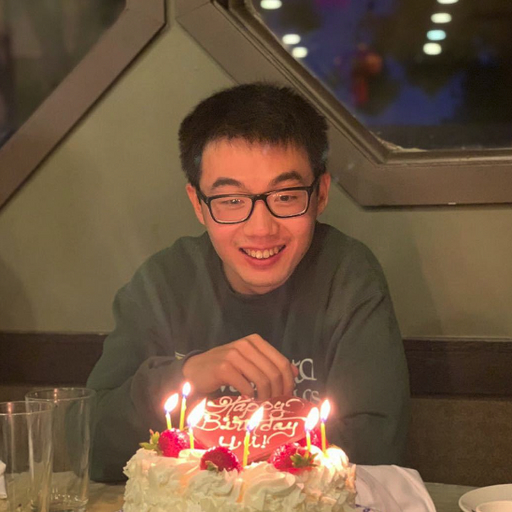

Email: ys646 [at] stanford.edu
I'm a postdoc at Stanford University and a researcher at NVIDIA. My research focuses on continual learning, specifically a conceptual framework called test-time training, where each test instance defines its own learning problem.
The high-level goal of my research is to enable AI systems to continuously learn like humans. Specifically, my research addresses two aspects in which human continual learning truly stands out.
First, each person has a unique brain that learns within the context of their individual life. This personalized form of continual learning is quite different from, for example, a chatbot model that is fine-tuned hourly using the latest information available worldwide. While such a model does change over time, it is still the same at any given moment for every user and every problem instance.
Second, most human learning happens without a boundary between training and testing. Consider your commute to work this morning. It is both "testing" because you did care about getting to work this very morning, and "training" because you were also gaining experience for future commutes. But in machine learning, the train-test split has always been a fundamental concept, often taught in the first lecture of an introductory course as: "Do not train on the test set!"
I believe that these two special aspects of human learning are intimately connected and should be studied together in the field of AI. In particular, continual learning will be most powerful when it targets the specific problem instance that we care about, conventionally known as the test instance. To focus on these two aspects, I have been developing a conceptual framework called test-time training since 2019. The best way to learn more about the technical side of my research is to look at the selected papers below.
For a complete list of papers, please see my Google Scholar.
Learning to Discover at Test Time
Mert Yuksekgonul*, Daniel Koceja*, Xinhao Li*, Federico Bianchi*, Jed McCaleb, Xiaolong Wang, Jan Kautz, Yejin Choi, James Zou†, Carlos Guestrin†, Yu Sun* (*: core contributors)
[paper]
[code]
End-to-End Test-Time Training for Long Context
Arnuv Tandon*, Karan Dalal*, Xinhao Li*, Daniel Koceja*, Marcel Rød*, Sam Buchanan, Xiaolong Wang, Jure Leskovec, Sanmi Koyejo, Tatsunori Hashimoto, Carlos Guestrin, Jed McCaleb, Yejin Choi, Yu Sun* (*: core contributors)
[paper]
[code]
Test-Time Training with Self-Supervision for Generalization under Distribution Shifts
Yu Sun, Xiaolong Wang, Zhuang Liu, John Miller, Alexei A. Efros, Moritz Hardt
ICML 2020
[paper]
[website]
[talk]